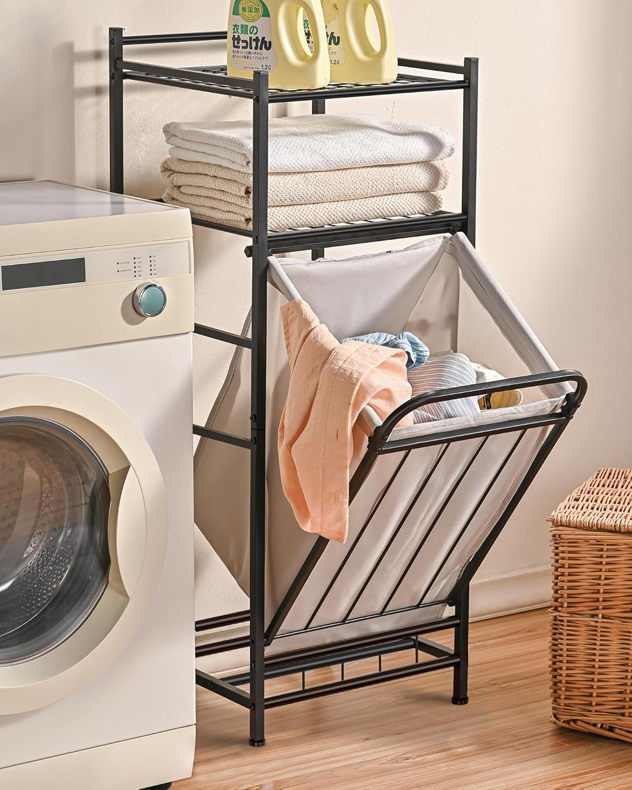

2 + 2Introduction & Setup
PSY 410: Data Science for Psychology
Dr. Sara Weston
2026-03-30
Why are we here?
Psychology has a data problem
In 2015, a team of 270 researchers tried to replicate 100 published psychology studies.
Only 36% produced the same results.
This wasn’t fraud. These were real labs, following published methods, using real data.
So what went wrong?
Many things went wrong
- Analyses that couldn’t be reproduced (even by the original authors)
- Data that was cleaned by hand with no record of what changed
- Figures that obscured rather than revealed patterns
- Code that only worked on one person’s laptop
The replication crisis isn’t just a statistics problem. It’s a workflow problem.
This course is about the workflow
Every technical skill we learn this quarter serves the same goal:
Start with raw data. End with a clear, honest, reproducible story.
That means learning to:
- Import data without breaking it
- Transform it transparently (with code, not clicks)
- Visualize it to find patterns — and catch errors
- Communicate what you found so others can verify it
About this course
What we’ll learn:
- Data visualization with ggplot2
- Data transformation with dplyr
- Data tidying with tidyr
- Reproducible reports with Quarto
Why it matters:
- Psychology is increasingly data-driven
- These skills make your work reproducible
- They transfer to any career that touches data
How this course works
Your grade
| Component | Weight | What it is |
|---|---|---|
| Assignments | 35% | 8 weekly coding exercises |
| Reading quizzes | 15% | 10 pre-class quizzes — unlimited retakes, best score counts |
| Participation | 15% | In-class pair coding submissions |
| Final project | 35% | Analyze a dataset of your choosing |
Weekly assignments
- Short, focused coding exercises that reinforce each session’s content
- Assigned on Wednesdays, due the following Sunday at 11:59 PM
- Designed to take 1–2 hours outside of class
- You’ll get time during class to start and ask questions
8 assignments total. Late submissions accepted up to 48 hours with a 10% daily penalty.
Reading quizzes
Each week, a brief Canvas quiz on that week’s readings. Due Sunday at 11:59 PM.
Each quiz pulls 5 random questions from a larger bank. You can retake as many times as you want — your best score counts.
10 quizzes total (one per week). Same late policy as assignments.
In-class participation
Every class, you’ll work with a partner on a coding exercise.
- Submit your attempt on Canvas before you leave
- Graded on completion and good-faith effort, not correctness
- This is your time to experiment, make mistakes, and learn
The final project
A capstone project where you apply everything to a dataset you choose.
| Milestone | When |
|---|---|
| Proposal | Week 5 — dataset and research questions |
| Draft | Week 8 — working code and preliminary results |
| Final report | Week 10 — polished Quarto document |
| Presentation | Finals week — 5-minute share-out |
The team challenge
At the start of the term, you’ll be placed on a team of 5–6 students.
Throughout the quarter, your team earns points:
- Pair coding — team gets a point when (nearly) everyone submits
- Assignments — team gets a point when everyone submits on time
- Quizzes — team with the highest average earns a point
- Fun challenges — weekly mini-challenges outside of class
The team challenge
The team challenge does not affect your grade.
The winning team at the end of the term earns a celebration.
We’ll form teams based on a short survey you’ll take today. Teams will be announced on Wednesday.
The tools we’ll use
The old way vs. the new way
Point-and-click (SPSS, Excel)
- Hard to reproduce
- Error-prone
- Limited visualizations
- Doesn’t scale
Code-based (R)
- Fully reproducible
- Transparent & shareable
- Unlimited customization
- Handles any data size
Why R specifically?
| What you need | R delivers |
|---|---|
| Free | Open source — no licenses, ever |
| Built for data | Created by statisticians, not software engineers |
| Psychology packages | psych, lavaan, lme4, brms |
| Publication-quality figures | ggplot2 — industry-leading |
| Reproducibility | Quarto integration (we’ll learn this) |
Getting set up
What you need to install
- R — the programming language
- Download from cloud.r-project.org
- RStudio — the interface we’ll use to write R
- Download from posit.co/download/rstudio-desktop
Important
Install R first, then RStudio. RStudio needs R to work!
R vs RStudio
Think of it like this:
- R is the engine of a car
- RStudio is the dashboard, steering wheel, and GPS
You could drive with just an engine… but why would you?
The RStudio interface

The four panes
| Pane | What it does |
|---|---|
| Source (top-left) | Write and edit your code files |
| Console (bottom-left) | Run code interactively, see output |
| Environment (top-right) | See your data and objects |
| Files/Plots/Help (bottom-right) | Navigate files, view plots, get help |
Let’s try it: The Console
Type in the Console and press Enter:
The assignment operator
In R, we use <- to assign values to objects:
Think of it as an arrow pointing left: “put 10 into x”
Tip
Keyboard shortcut: Alt + - (Windows) or Option + - (Mac)
Organizing your work
Two mental models
The filing cabinet
The laundry basket

Two mental models
The filing cabinet
Every piece of paper has a place where it lives.
You navigate to that place to find it.
Documents/
├── psy410/
│ ├── data/
│ └── scripts/
└── thesis/
├── data/
└── drafts/The laundry basket
Everything is in one pile.
You search to find it.
Google, Spotlight, Finder search, “Recent files”…
Why coding requires the filing cabinet
When you write:
You’re giving directions: “Start here. Go into data. Then into raw. Find survey_responses.csv.”
If the file isn’t exactly there, the code breaks. No fuzzy matching. No “did you mean…?”
Important
This is why we need to learn directory structure — even if it feels foreign.
Why use RStudio Projects?
Without projects:
- Files scattered everywhere
setwd()nightmares- “It works on my computer”
- Lost work when switching tasks
With projects:
- Everything in one folder
- Paths just work
- Share the whole folder
- Easy to switch between projects
Tip
The golden rule: Someone else should be able to run your code and get the same results. That “someone else” includes Future You — who has forgotten everything.
Creating a project
- File → New Project…
- Choose “New Directory” → “New Project”
- Name it (e.g., “psy410”)
- Pick a location (Documents folder is fine)
- Click “Create Project”
You’ll see a .Rproj file appear — this is your project file. From now on, double-click it to open your project.
A standard project structure
psy410/
├── psy410.Rproj
├── data/
│ ├── raw/ # Original data (READ ONLY)
│ └── clean/ # Processed data
├── scripts/
│ ├── 01_clean.R # Data cleaning
│ ├── 02_analyze.R # Main analysis
│ └── 03_visualize.R # Figures
└── output/
└── figures/ # Saved plotsA standard project structure
Two principles:
- Raw data is sacred — never modify original files
- Outputs are disposable — you can always regenerate them from code
Naming things
Good names make code self-documenting. Bad names create confusion and bugs.
Do this:
reaction_timemean_anxietysurvey_clean.csv01_clean_data.R
Not this:
x1,temp,fooAvgAnx(hard to read)data_final_v2_REAL.csvstuff.R,untitled3.R
The test: Can someone unfamiliar with your project understand what a variable contains or what a file does?
R Scripts
R scripts (.R files) are where you write and save your code.
To create one:
- File → New File → R Script
- Or press Ctrl/Cmd + Shift + N
Always save your scripts! The console history disappears.
Running code from a script
- Run one line: Put cursor on line, press Ctrl/Cmd + Enter
- Run selection: Highlight code, press Ctrl/Cmd + Enter
- Run entire script: Ctrl/Cmd + Shift + Enter
Tip
You’ll use Ctrl/Cmd + Enter constantly. Memorize it!
Your first real task
Installing packages
R’s power comes from packages — bundles of functions others have written.
The tidyverse
The tidyverse is actually a collection of packages:
| Package | Purpose |
|---|---|
ggplot2 |
Data visualization |
dplyr |
Data manipulation |
tidyr |
Data tidying |
readr |
Reading data files |
tibble |
Modern data frames |
stringr |
String manipulation |
forcats |
Working with factors |
purrr |
Functional programming |
We’ll use most of these throughout the course.
Let’s look at some data
After loading tidyverse, you have access to built-in datasets:
# A tibble: 234 × 11
manufacturer model displ year cyl trans drv cty hwy fl class
<chr> <chr> <dbl> <int> <int> <chr> <chr> <int> <int> <chr> <chr>
1 audi a4 1.8 1999 4 auto… f 18 29 p comp…
2 audi a4 1.8 1999 4 manu… f 21 29 p comp…
3 audi a4 2 2008 4 manu… f 20 31 p comp…
4 audi a4 2 2008 4 auto… f 21 30 p comp…
5 audi a4 2.8 1999 6 auto… f 16 26 p comp…
6 audi a4 2.8 1999 6 manu… f 18 26 p comp…
7 audi a4 3.1 2008 6 auto… f 18 27 p comp…
8 audi a4 quattro 1.8 1999 4 manu… 4 18 26 p comp…
9 audi a4 quattro 1.8 1999 4 auto… 4 16 25 p comp…
10 audi a4 quattro 2 2008 4 manu… 4 20 28 p comp…
# ℹ 224 more rowsYour turn!
- Create a new RStudio Project called “psy410”
- Inside it, create three folders:
data,scripts,output - Create a new R script in
scripts/and save it as01_practice.R - Install and load the tidyverse
- Run
glimpse(mpg)andglimpse(diamonds) - Save your script!
Getting help
When you’re stuck
- Use
?— e.g.,?meanopens the help page - Google it — seriously, everyone does this
- Stack Overflow — most R questions are answered there
- R4DS book — r4ds.hadley.nz
- Ask me — that’s what I’m here for!
Reading help pages
Help pages include:
- Description — what the function does
- Usage — how to call it
- Arguments — what inputs it takes
- Examples — working code you can run
The examples section is gold — run them!
Error messages
Errors will happen. A lot. That’s normal.
Error in maen(c(1, 2, 3)): could not find function "maen"Read the error message carefully — R is trying to help you.
Why no AI? (Yet)
The bicycle vs. the motorcycle
Steve Jobs called the computer a “bicycle for the mind” — it amplifies your pedaling, but you provide the balance and direction.
Generative AI is more like a motorcycle. It provides the engine. But if you don’t know how to ride, you crash faster and harder.
Read Cat Hicks: “Cognitive helmets for AI bicycles”
The metacognition trap
AI gives you a working answer immediately. It feels like you solved it.
But you didn’t build the mental model of why it works.
When the AI hallucinates (which it will), you cannot debug it. You are stranded.
Using AI now = skipping the gym but expecting to get strong.
Building the helmet first
Before we get on the motorcycle, we need a cognitive helmet:
- Syntax literacy — reading code as fluently as English
- Debugging resilience — emotional regulation when things break
- Strategic friction — breaking big problems into small pieces
That’s what the many short assignments in this course build. The goal: you are the pilot, not the passenger.
Coding teaches you to think differently
Learning R isn’t just about R. It’s about a set of habits that transfer everywhere:
. . .
- Breaking big problems into small steps — instead of staring at a question, you ask: what’s the first concrete thing I can do?
- Thinking in transformations — data isn’t a fixed object; it’s something you act on, step by step
- Debugging as a skill — forming a hypothesis, testing it, revising — this is just the scientific method
. . .
You may never write another line of R after June. That’s okay. The thinking you build here will show up everywhere: in a lab, in a dissertation, in any job that asks you to solve a messy problem.
The interview no one warns you about
Many data science and research jobs include a technical interview — you’re given a dataset and asked to write code live, on the spot.
No AI. No Stack Overflow. No notes. Just you and a blank script.
You don’t need to be ready for that by June. But every time you practice writing code from memory — instead of copying or prompting — you’re building the confidence and fluency that will matter when it counts.
Start now, so you’re not starting from zero later.
Wrapping up
Before next class
Read:
Do:
- Complete the team formation survey on Canvas (if you haven’t already)
- Install R and RStudio
- Create your psy410 project with
data/,scripts/, andoutput/folders - Install the tidyverse package
- Poke around! Try things! Break stuff!
Key takeaways
- Psychology needs better data practices — that’s what this course builds
- R is a tool — like learning any tool, it takes practice
- Organization matters — filing cabinet, not laundry basket
- Name things clearly — your future self will thank you
- Errors are learning opportunities — read them, Google them
The one thing to remember
Every skill you learn in this course is a brick in a wall between you and the replication crisis.
See you Wednesday for your first visualization!
PSY 410 | Session 1
Comments
Use
#to write comments — notes for yourself and others:Comments are essential. Your future self will thank you.